Forecasting Project 1 - Group 7
THINGS THAT NEED TO BE DONE
- In the forecast we show only the final model chosen, why show lichtenstein 5.5.1 + 5.5.2?
1. Introduction
This project is a forecasting analysis for the electricity exports from Switzerland to several European countries. The data used was all provided by the professor and no additional datasets were used. We have selected the models that fit each country the best (based on some performance metrics) and have created forecasts and CI’s for each country as well as the total. In the final report you are now reading, only the most important information is included, and whatever was deemed unnecessary for the report you can find in our code files/appendix.
The forecasting models used in this project are S-Naive, S-ARIMA, ETS and a variant of ARIMA piece-wise for a specific country.
2. Data Processing
The data we were given was already cleaned, without any missing values. The only noteworthy cleaning we did, was to format the names of all columns and all rows, and to then convert the final table to a tsibble in order to be able to use functions from the tsibble and fpp3 package. All details on how this was done can be found in the code files.
3. Exploratory Data Analysis
3.1 Historical data plots
In this section you can find an example of the exploratory analysis we did to identify outliers and behaviors in our data. We created historical plots of all the data for each country, but this is not presented here and can instead be found in our appendix. The anomalies and outliers we discovered in that section, were used to guide our analysis.
For example, we noticed irregularities in the amplitudes of seasonality over time. For countries like Germany and France, the amplitude of the seasonality seemed to increase towards the most recent years. Based on this, we decided to do a seasonal/trend decomposition for each country to further analyze this.
Furthermore, for Lichtenstein, we noticed a huge drop in exports after 2008-2009, which indicated that we should try different models like the piece-wise model to separate the differences in trend over time.
3.2 Seasonal Sub-series plots
We also created seasonal sub-series plots to explore specific months in more detail, for each country. Below you can see the one for the total exports:
data_elec %>% gg_subseries(Total) +
ylab("GWt") + xlab("Month") +
ggtitle("Seasonal subseries plot: Swiss electricity exported to All countries")
Here are some observations based on these plots for each country (which you can find in appendix):
- Germany: It looks like Germany consistently receives more electricity during the summer months (May, June, July, August). Seasonality seems to vary over time, increasing towards the most recent years.
- France: It looks like there are two peaks in energy exported to
France during the year, one in July, and one in December.
- Italy: Similar energy peak in July.
- Austria: Same trend, with a single peak in the summer months, and then relatively constant energy for the other months.
- Lichtenstein: This country shows the opposite trend, with a very
smooth peak in the coldest winter months (Jan,Feb), and the lowest
energy exports during the summer months.
- Total: Clearly seeing the peak in energy exports to countries in the summer, and specifically in July. The other months are at similar levels for the total electricity exports.
In summary, the main observation we got from these historical plots, was that all countries (except Lichtenstein) experience peaks in the electricity they receive from Switzerland in the summer months.
Before this monthly analysis, we expected that energy exports to these countries, would be higher in the winter months, as that’s when people tend to consume more energy to heat up their homes (we assumed this to be one of the biggest drivers in energy consumption). However, in reality it seems like electricity exports are peaking in the summer and not in the winter months. Our explanation for this is that the ways to heat up a home in the winter are mainly based on oil/gas rather than electricity which is why there is no peak for electricity exports in the winter. On the contrary, during the summer months, people tend to cool down their homes using Air-conditioning which primarily uses electricity, hence the peak in the summer months. This does not explain why Lichtenstein does not follow the same pattern, despite being geographically right next to all of these countries (hence having similar climate).
3.3 ACF - Autocorrelation analysis
Before moving on with the models and in order to be able to use them, we wanted to check for autocorrelation in the time series. Here is data on Germany which is lagged by 12 periods:
#Graph of 12 lagged months for Germany
data_elec %>%
gg_lag(Germany, lags = 1:12, geom="point") +
ggtitle("Germany 12-period lag graph")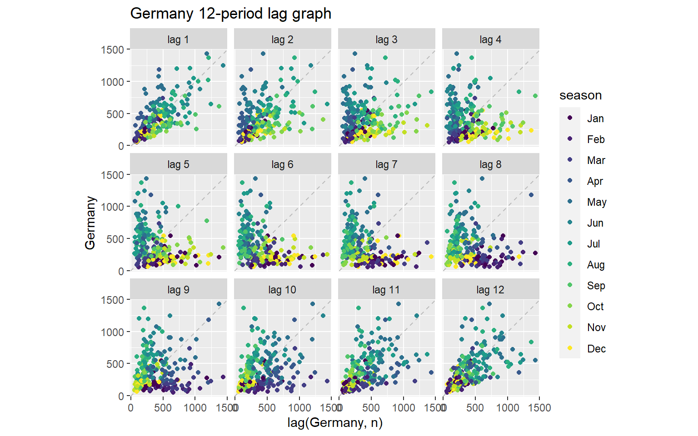
From this graph, we can visualize autocorrelation. It’s clear that the autocorrelation is the highest for the 1-month lag, and the 12-month lag. We can see this because the points in the first and last scatterplot (Current month vs Lagged period) approach the 45-degree line, indicating the similarity in magnitude of two the observations.
Based on the strong and clear presence of autocorrelation, we expect that a model like ARIMA/SARIMA will do a good job to capture this auto-correlation component, and will most likely have the best performance compared to other models. On the contrary, auto-correlation tends to impact the performance of SNAIVE models, as they rely on the assumption that the future values are solely determined by past values without considering any auto-correlation patterns. This suggests that our SNAIVE model will not be fitting the data as well.
3.4 STL Decomposition for all countries
We decided to perform an STL decomposition, as it can provide valuable insights and help explore and understand any strange patterns in our data.
Overall as you can see below, we observed strong seasonality and trend patterns in each country and all countries together which suggested our models should have a way to capture the presence of seasonality and trend. This can be seen in the trend + season_year graphs which show the trend + seasonal component in relation to the overall variation in the data (this is seen using the grey box on the left of each graph). Finally, we can also see that the “remainder” component is quite significant in size (relative to the overall variation) which makes the time series difficult to predict accurately.
Germany
data_elec %>%
model(STL(Germany ~ trend(window = 7) + season(window = "periodic"),
robust = TRUE)) %>%
components() %>%
autoplot()
France
#STL Decomposition_France
data_elec %>%
model(STL(France ~ trend(window = 7) + season(window = "periodic"),
robust = TRUE)) %>%
components() %>%
autoplot()
Italy
data_elec %>%
model(STL(Italy ~ trend(window = 7) + season(window = "periodic"),
robust = TRUE)) %>%
components() %>%
autoplot()
Austria
Austria trend undergoes a huge increase during the period 2018-2021, follow by a drastic drop which are not explainable by historical data and strongly suggest that it is affected by a covariate. Seasonality is constant and stable over time during the whole period.
data_elec %>%
model(STL(Austria ~ trend(window = 7) + season(window = "periodic"),
robust = TRUE)) %>%
components() %>%
autoplot()
Lichtenstein
Lichtenstein trend undergoes a drastical drop during the year of 2008, that is not explainable by historical data and strongly suggest that it is affected by a covariate. Seasonality is constant and stable over time during the whole period. Thus we observe that the amplitude and duration of the seasonal patterns remain unchanged over different time periods.
data_elec %>%
model(STL(Lichtenstein ~ trend(window = 7) + season(window = "periodic"),
robust = TRUE)) %>%
components() %>%
autoplot()

3.5 Unit Root Test for Stationarity
In the final part of our EDA, we wanted to confirm our suspicion of the presence of non-stationarity (since we found a significant trend and seasonal component in the STL analysis). To do this, we used the Unit Root Test to check for the presence of a unit root in the time series, which is an indication of non-stationarity. Below are the null and alternative hypotheses for this statistical test:
\[H_0: The\ time\ series\ has\ a\ unit\ root\ (non\ stationary)\\ H_1: The\ time\ series\ is\ stationary\]
After doing the test for all countries, we found that all of the time
series (except Lichtenstein) are stationary at a significance level of:
alpha = 0.05. This is against our initial assumption that
the data is non-stationary, which was based on the fact that we saw a
clear trend and seasonality for many of the countries. When the data is
stationary, any model can be used (stationarity in the data is one of
the assumptions for NAIVE and ETS models). However for Lichtenstein,
since the p-value is larger than our significance level of 5%, we have
to difference or log the Lichtenstein data before using some models.
Germany
The test statistic was -6.0768. The p-value of the test was 0.01,
which indicates strong evidence to reject the null hypothesis of
non-stationarity at alpha = 0.05. Thus Germany data is a
stationary time series.
## Registered S3 method overwritten by 'quantmod':
## method from
## as.zoo.data.frame zoo##
## Augmented Dickey-Fuller Test
##
## data: ts_g
## Dickey-Fuller = -6.3865, Lag order = 6, p-value = 0.01
## alternative hypothesis: stationaryFrance
The test statistic was -4.6123 The p-value of the test was 0.01,
which indicates strong evidence to reject the null hypothesis of
non-stationarity at alpha = 0.05. Thus France data is a
stationary time series.
##
## Augmented Dickey-Fuller Test
##
## data: ts_F
## Dickey-Fuller = -5.671, Lag order = 6, p-value = 0.01
## alternative hypothesis: stationaryItaly
The test statistic was -6.8897 The p-value of the test was 0.01. Thus Italy data is a stationary time series.
##
## Augmented Dickey-Fuller Test
##
## data: ts_I
## Dickey-Fuller = -6.1852, Lag order = 6, p-value = 0.01
## alternative hypothesis: stationaryAustria
The test statistic was -3.7273 The p-value of the test was 0.02443,
which indicates strong evidence to reject the null hypothesis of
non-stationarity at alpha = 0.05. Thus Austria data is a
stationary time series.
##
## Augmented Dickey-Fuller Test
##
## data: ts_A
## Dickey-Fuller = -3.6792, Lag order = 6, p-value = 0.02595
## alternative hypothesis: stationaryLichtenstein
The test statistic was -6.5052 The p-value of the test was 0.01. Thus Lichtenstein data is a stationary time series.
##
## Augmented Dickey-Fuller Test
##
## data: ts_Lich
## Dickey-Fuller = -3.0063, Lag order = 6, p-value = 0.1521
## alternative hypothesis: stationaryTotal
Finally, The test statistic was -4.0009 The p-value of the test was 0.01103. Thus Total data is a stationary time series.
##
## Augmented Dickey-Fuller Test
##
## data: ts_Tot
## Dickey-Fuller = -4.8658, Lag order = 6, p-value = 0.01
## alternative hypothesis: stationary4. Model Selection
Methodology
Before creating forecasts, we wanted to discover which model fits our data the best. To evaluate this, we have decided to fit different models for each country, and then pick the best one.
To do this, we split our data into a training and a test set. The first one we will use to estimate any parameters of the forecasting model, and the second is to examine each model’s accuracy. The training set for all countries is basically a long time period, from the beginning of our data until the end of 2015, and then the rest of the data is used in the test set.
The different models we decided to explore are S-ARIMA, ETS, S-NAIVE and TSLM, and we used them to forecast 60 periods (months) and then compare those with the data in the test set.
For each country, we selected the model with the best accuracy metrics, as we will explain below. Some of the metrics we will look at are RMSE and MAE and low metric values indicate a better predictive performance of the model. A value of 0 indicates a perfect fit between the predicted and actual values. Residuals analysis is also going to be plotted to see how well the model captures the dynamics of the data. Good models’ residuals should be stationary (white noise) and have no patterns.
We can see strong seasonality and trend in data from our decomposition analysis, which is why we selected the models mentioned above. We expect these models can handle these types of data the best.
As the most accurate forecast is of interest, we will give more weight to the model with low values of RMSE and MAE, even though another model has a higher AIC (see Appendix 2.).
4.1 Germany
Germany_since_2015 <- data_elec %>%
select(Date,Germany) %>%
suppressWarnings(filter(Date >= as.Date("2015-01-01")))Testing Models
Below is the plot of how well each model fits the data based on a 60-period prediction starting from 2016.
#Split the data
training_ge <- data_elec %>% select(Date,Germany) %>% filter(Date < as.Date("2016-01-01"))
test_ge <- data_elec %>% select(Date,Germany) %>% filter(Date >= as.Date("2016-01-01"))# Fit ARIMA model and generate forecasts
data_fit_ge_a <- training_ge %>%
model(ARIMA(Germany))
forecasts_ge_a <- data_fit_ge_a %>%
forecast(h = 60)
# Fit ETS model and generate forecasts
data_fit_ge_e <- training_ge %>%
model(ETS(Germany))
forecasts_ge_e <- data_fit_ge_e %>%
forecast(h = 60)
# Fit seasonal naive model and generate forecasts
data_fit_ge_n <- training_ge %>%
model(SNAIVE(Germany))
forecasts_ge_n <- data_fit_ge_n %>%
forecast(h = 60)
# Combine forecasts into a single data frame
all_forecasts_ge <- bind_rows(
data.frame(Date = forecasts_ge_a$Date, Method = "ARIMA", Forecast = forecasts_ge_a$.mean),
data.frame(Date = forecasts_ge_e$Date, Method = "ETS", Forecast = forecasts_ge_e$.mean),
data.frame(Date = forecasts_ge_n$Date, Method = "SNAIVE", Forecast = forecasts_ge_n$.mean))
# Plot all three sets of forecasts together
data_elec %>% autoplot(Germany) +
geom_line(data = all_forecasts_ge, aes(x = Date, y = Forecast, color = Method)) +
labs(title = "Electricity Consumption in Germany")
Measuring Model Accuracy
According to the accuracy table RMSE, MAE and other indicators, ETS has the lowest values on the test data. The ARIMA model has an AIC of AIC=2260.11, AICc of AICc=2260.6, and BIC of 2279.27. On the other hand, the ETS model has an AIC of 2797.057, AICc of 2799.784, and BIC of 2845.919. Therefore, based on these criteria, we can conclude that the ARIMA model fits the data better than the ETS model.
#Accuracy
germany_accuracy_a <- accuracy(forecasts_ge_a, test_ge)
germany_accuracy_e <- accuracy(forecasts_ge_e, test_ge)
germany_accuracy_n <- accuracy(forecasts_ge_n, test_ge)
germany_accuracy_table <- rbind(
data.frame(germany_accuracy_a),
data.frame(germany_accuracy_e),
data.frame(germany_accuracy_n))| .model | .type | ME | RMSE | MAE | MPE | MAPE | MASE | RMSSE | ACF1 |
|---|---|---|---|---|---|---|---|---|---|
| ARIMA(Germany) | Test | 22.21212 | 271.7830 | 191.6002 | -21.98723 | 57.15420 | NaN | NaN | 0.6419235 |
| ETS(Germany) | Test | 20.06976 | 263.9592 | 183.7753 | -26.84302 | 57.48681 | NaN | NaN | 0.5797918 |
| SNAIVE(Germany) | Test | 92.46667 | 285.7502 | 190.6667 | -1.86239 | 49.34599 | NaN | NaN | 0.6260558 |
## Series: Germany
## Model: ARIMA(1,0,1)(2,1,1)[12]
##
## Coefficients:
## ar1 ma1 sar1 sar2 sma1
## 0.7853 -0.2946 -0.8231 -0.4046 0.0965
## s.e. 0.0731 0.1106 0.1925 0.1247 0.2054
##
## sigma^2 estimated as 15296: log likelihood=-1124.06
## AIC=2260.11 AICc=2260.6 BIC=2279.27## Series: Germany
## Model: ETS(M,N,M)
## Smoothing parameters:
## alpha = 0.3739358
## gamma = 0.3451097
##
## Initial states:
## l[0] s[0] s[-1] s[-2] s[-3] s[-4] s[-5] s[-6]
## 653.4368 0.6246774 0.7255761 0.7347587 1.011001 1.387123 1.493534 1.469065
## s[-7] s[-8] s[-9] s[-10] s[-11]
## 1.560156 0.7932617 0.864902 0.6433645 0.6925801
##
## sigma^2: 0.094
##
## AIC AICc BIC
## 2797.057 2799.784 2845.919Residuals
The output below also suggests that the ARIMA model did well in capturing all the dynamics in data, as the residuals seem to be white noise.
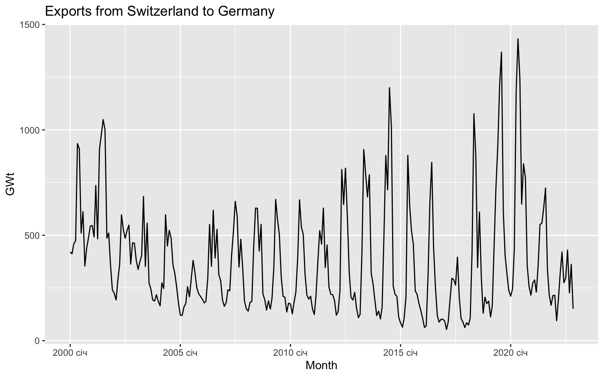
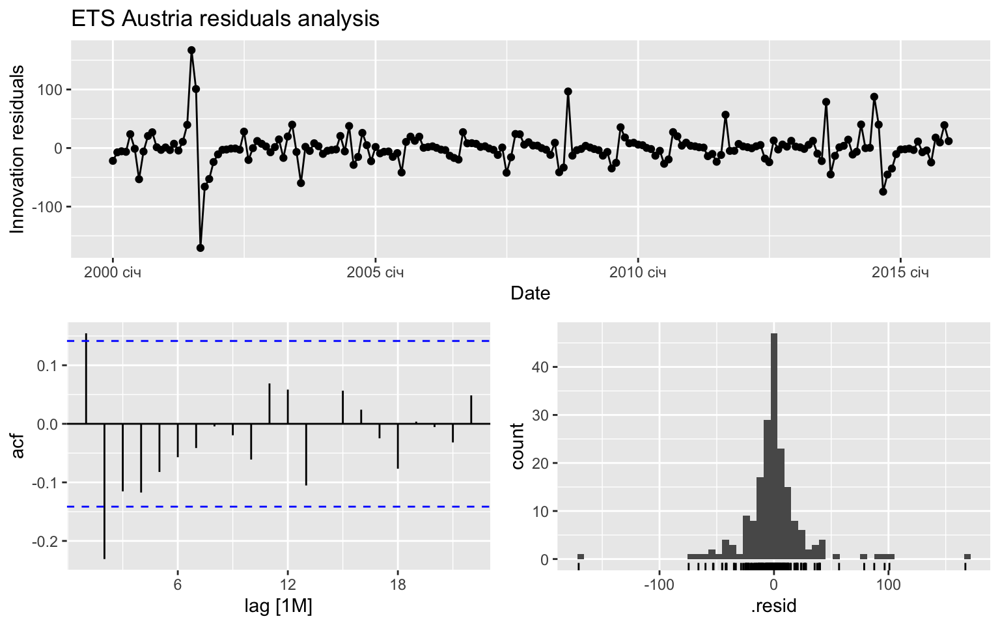
## Warning: Removed 12 rows containing missing values (`geom_line()`).## Warning: Removed 12 rows containing missing values (`geom_point()`).## Warning: Removed 12 rows containing non-finite values (`stat_bin()`).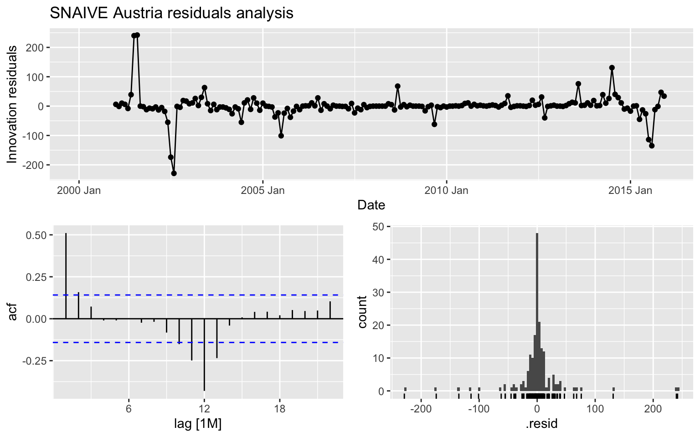
4.2 Italy
#Selecting Italy only since 2018 to better display the forecast. 2018 will both show the trend BEFORE covid + improve display
Italy_since_2018 <- data_elec %>% select(Date,Italy) %>% filter(Date >= as.Date("2018-01-01"))Testing Models
Below is the plot of how well each model fits the data based on a 60-period prediction starting from 2016.
#Split the data
training_it <- data_elec %>% select(Date, Italy) %>% filter(Date < as.Date("2016-01-01"))
test_it <- data_elec %>% select(Date, Italy) %>% filter(Date >= as.Date("2016-01-01"))
# Fit ARIMA model and generate forecasts
data_fit_it_a <- training_it %>%
model(ARIMA(Italy))
forecasts_it_a <- data_fit_it_a %>%
forecast(h = 60)
# Fit ETS model and generate forecasts
data_fit_it_e <- training_it %>%
model(ETS(Italy))
forecasts_it_e <- data_fit_it_e %>%
forecast(h = 60)
# Fit seasonal naive model and generate forecasts
data_fit_it_n <- training_it %>%
model(SNAIVE(Italy))
forecasts_it_n <- data_fit_it_n %>%
forecast(h = 60)
# Combine forecasts into a single data frame
all_forecasts_it <- bind_rows(
data.frame(Date = forecasts_it_a$Date, Method = "ARIMA", Forecast = forecasts_it_a$.mean),
data.frame(Date = forecasts_it_e$Date, Method = "ETS", Forecast = forecasts_it_e$.mean),
data.frame(Date = forecasts_it_n$Date, Method = "SNAIVE", Forecast = forecasts_it_n$.mean))
# Plot all three sets of forecasts together
data_elec %>% autoplot(Italy) +
geom_line(data = all_forecasts_it, aes(x = Date, y = Forecast, color = Method)) +
labs(title = "Electricity Demand in Italy")
Measuring Model Accuracy
According to the accuracy table below, RMSE, MAE, as well as AIC, AICc, and BIC, ARIMA has the lowest values on the test data than the ETS model.
#Accuracy
italy_accuracy_a <-accuracy(forecasts_it_a, test_it)
italy_accuracy_e <-accuracy(forecasts_it_e, test_it)
italy_accuracy_n <-accuracy(forecasts_it_n, test_it)
italy_accuracy_table <- rbind(
data.frame(italy_accuracy_a),
data.frame(italy_accuracy_e),
data.frame(italy_accuracy_n))| .model | .type | ME | RMSE | MAE | MPE | MAPE | MASE | RMSSE | ACF1 |
|---|---|---|---|---|---|---|---|---|---|
| ARIMA(Italy) | Test | -326.2634 | 567.8518 | 397.3082 | -29.97463 | 32.99264 | NaN | NaN | 0.5201659 |
| ETS(Italy) | Test | -684.9666 | 814.8247 | 688.7554 | -51.88364 | 52.02657 | NaN | NaN | 0.5512166 |
| SNAIVE(Italy) | Test | -412.1667 | 655.4941 | 479.4667 | -33.06326 | 36.73605 | NaN | NaN | 0.4827242 |
## Series: Italy
## Model: ARIMA(1,0,0)(2,0,0)[12] w/ mean
##
## Coefficients:
## ar1 sar1 sar2 constant
## 0.6369 0.3471 0.3479 227.4524
## s.e. 0.0565 0.0673 0.0717 16.0636
##
## sigma^2 estimated as 73103: log likelihood=-1349.39
## AIC=2708.77 AICc=2709.1 BIC=2725.06## Series: Italy
## Model: ETS(A,N,A)
## Smoothing parameters:
## alpha = 0.7893584
## gamma = 0.0001000066
##
## Initial states:
## l[0] s[0] s[-1] s[-2] s[-3] s[-4] s[-5] s[-6]
## 2001.551 15.17983 90.59285 210.0609 -95.62885 -503.615 165.2749 -103.177
## s[-7] s[-8] s[-9] s[-10] s[-11]
## -101.2201 -20.17958 171.0857 59.06312 112.5631
##
## sigma^2: 71693.32
##
## AIC AICc BIC
## 3171.492 3174.219 3220.354Residuals
The output below also suggests that the ARIMA model did well in capturing all the dynamics in data, as the residuals seem to be white noise.

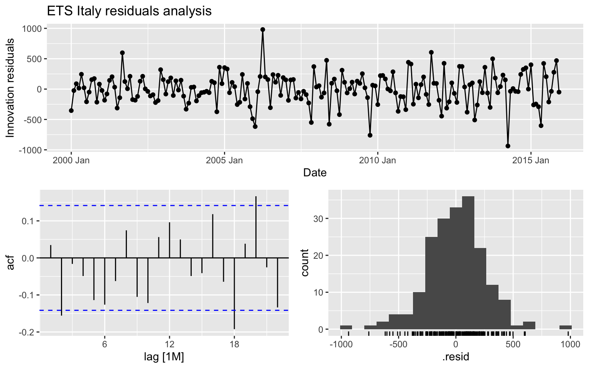
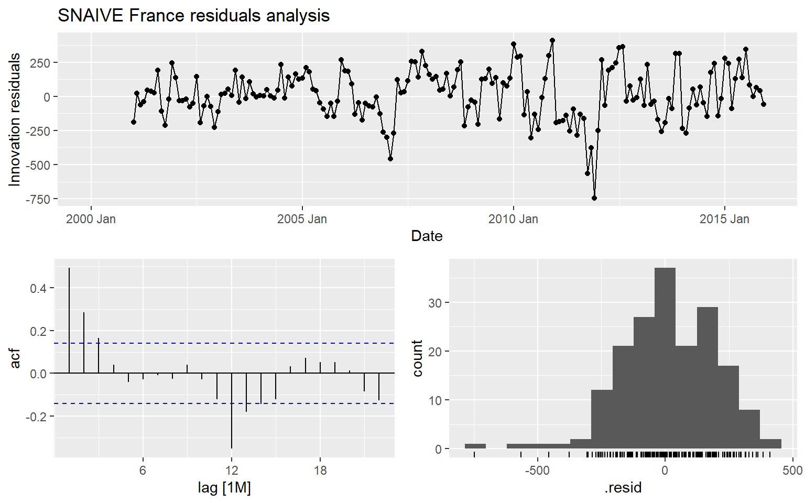
4.3 Austria
#Investigating Austria closely since 2018, because it seems like something changed -> perhaps should use Piecewise!!!
Austria_since_2015 <- data_elec %>% select(Date,Austria) %>% filter(Date >= as.Date("2015-01-01"))
Austria_since_2018 <- data_elec %>% select(Date,Austria) %>% filter(Date >= as.Date("2018-02-01"))Testing Models
Below is the plot of how well each model fits the data based on a 60-period prediction starting from 2016.
#Split the data
training_au <- data_elec %>% select(Date, Austria) %>% filter(Date < as.Date("2016-01-01"))
test_au <- data_elec %>% select(Date, Austria) %>% filter(Date >= as.Date("2016-01-01"))
# Fit ARIMA model and generate forecasts
data_fit_au_a <- training_au %>%
model(ARIMA(Austria, stepwise = FALSE))
forecasts_au_a <- data_fit_au_a %>%
forecast(h = 60)
# Fit ETS model and generate forecasts
data_fit_au_e <- training_au %>%
model(ETS(Austria))
forecasts_au_e <- data_fit_au_e %>%
forecast(h = 60)
# Fit seasonal naive model and generate forecasts
data_fit_au_n <- training_au %>%
model(SNAIVE(Austria))
forecasts_au_n <- data_fit_au_n %>%
forecast(h = 60)
# Combine forecasts into a single data frame
all_forecasts_au <- bind_rows(
data.frame(Date = forecasts_au_a$Date, Method = "ARIMA", Forecast = forecasts_au_a$.mean),
data.frame(Date = forecasts_au_e$Date, Method = "ETS", Forecast = forecasts_au_e$.mean),
data.frame(Date = forecasts_au_n$Date, Method = "SNAIVE", Forecast = forecasts_au_n$.mean))
# Plot all three sets of forecasts together
data_elec %>% autoplot(Austria) +
geom_line(data = all_forecasts_au, aes(x = Date, y = Forecast, color = Method)) +
labs(title = "Electricity Demand in Austria")
Measuring Model Accuracy
According to the accuracy table below, RMSE, MAE, and other indicators, ETS has the lowest values on the test data. However, ARIMA has lower values of AIC, AICc, and BIC than the ETS model.
#Accuracy
austria_accuracy_a <-accuracy(forecasts_au_a, test_au)
austria_accuracy_e <-accuracy(forecasts_au_e, test_au)
austria_accuracy_n <-accuracy(forecasts_au_n, test_au)
austria_accuracy_table <- rbind(
data.frame(austria_accuracy_a),
data.frame(austria_accuracy_e),
data.frame(austria_accuracy_n))| .model | .type | ME | RMSE | MAE | MPE | MAPE | MASE | RMSSE | ACF1 |
|---|---|---|---|---|---|---|---|---|---|
| ARIMA(Austria, stepwise = FALSE) | Test | 66.64429 | 96.87947 | 72.54087 | 4.907234 | 115.4226 | NaN | NaN | 0.7391642 |
| ETS(Austria) | Test | 45.52002 | 84.62589 | 61.72927 | -72.600292 | 154.0206 | NaN | NaN | 0.7354246 |
| SNAIVE(Austria) | Test | 67.66667 | 98.50110 | 73.33333 | 14.887570 | 112.9874 | NaN | NaN | 0.7014929 |
## Series: Austria
## Model: ARIMA(0,0,3)(2,0,1)[12] w/ mean
##
## Coefficients:
## ma1 ma2 ma3 sar1 sar2 sma1 constant
## 0.5991 0.1591 0.1055 0.6072 0.0853 -0.3699 6.3202
## s.e. 0.0742 0.0814 0.0731 0.2940 0.1561 0.2850 2.1449
##
## sigma^2 estimated as 796.7: log likelihood=-911.62
## AIC=1839.24 AICc=1840.03 BIC=1865.3## Series: Austria
## Model: ETS(A,N,A)
## Smoothing parameters:
## alpha = 0.5246043
## gamma = 0.0001000228
##
## Initial states:
## l[0] s[0] s[-1] s[-2] s[-3] s[-4] s[-5] s[-6]
## 39.20052 -12.84024 -7.616428 -8.086183 -0.9683645 43.50499 39.8389 2.189109
## s[-7] s[-8] s[-9] s[-10] s[-11]
## 0.7038562 -11.55768 -14.38028 -16.43484 -14.35283
##
## sigma^2: 895.6703
##
## AIC AICc BIC
## 2330.036 2332.764 2378.899Residuals
The output below also suggests that the ARIMA model did well in capturing all the dynamics in data, as the residuals seem to be white noise.


## Warning: Removed 12 rows containing missing values (`geom_line()`).## Warning: Removed 12 rows containing missing values (`geom_point()`).## Warning: Removed 12 rows containing non-finite values (`stat_bin()`).
4.4 France
Testing Models
Below is the plot of how well each model fits the data based on a 60-period prediction starting from 2016.
#Split the data
training_fr <- data_elec %>% select(Date, France) %>% filter(Date < as.Date("2016-01-01"))
test_fr <- data_elec %>% select(Date, France) %>% filter(Date >= as.Date("2016-01-01"))
# Fit ARIMA model and generate forecasts
data_fit_fr_a <- training_fr %>%
model(ARIMA(France))
forecasts_fr_a <- data_fit_fr_a %>%
forecast(h = 60)
# Fit ETS model and generate forecasts
data_fit_fr_e <- training_fr %>%
model(ETS(France))
forecasts_fr_e <- data_fit_fr_e %>%
forecast(h = 60)
# Fit seasonal naive model and generate forecasts
data_fit_fr_n <- training_fr %>%
model(SNAIVE(France))
forecasts_fr_n <- data_fit_fr_n %>%
forecast(h = 60)
# Combine forecasts into a single data frame
all_forecasts_fr <- bind_rows(
data.frame(Date = forecasts_fr_a$Date, Method = "ARIMA", Forecast = forecasts_fr_a$.mean),
data.frame(Date = forecasts_fr_e$Date, Method = "ETS", Forecast = forecasts_fr_e$.mean),
data.frame(Date = forecasts_fr_n$Date, Method = "SNAIVE", Forecast = forecasts_fr_n$.mean))
# Plot all three sets of forecasts together
data_elec %>% autoplot(France) +
geom_line(data = all_forecasts_fr, aes(x = Date, y = Forecast, color = Method)) +
labs(title = "Electricity Demand in France")
Measuring Model Accuracy
According to the accuracy table below, RMSE, MAE, and other indicators, ETS has the lowest values on the test data. However, ARIMA has lower values of AIC, AICc, and BIC than the ETS model.
#Accuracy
france_accuracy_a <-accuracy(forecasts_fr_a, test_fr)
france_accuracy_e <-accuracy(forecasts_fr_e, test_fr)
france_accuracy_n <-accuracy(forecasts_fr_n, test_fr)
france_accuracy_table <- rbind(
data.frame(france_accuracy_a),
data.frame(france_accuracy_e),
data.frame(france_accuracy_n))| .model | .type | ME | RMSE | MAE | MPE | MAPE | MASE | RMSSE | ACF1 |
|---|---|---|---|---|---|---|---|---|---|
| ARIMA(France) | Test | 75.45265 | 237.5959 | 188.5761 | -17.89751 | 58.02278 | NaN | NaN | 0.3711334 |
| ETS(France) | Test | 36.97867 | 204.7456 | 161.7681 | -22.58217 | 52.37757 | NaN | NaN | 0.2004276 |
| SNAIVE(France) | Test | 29.75000 | 230.1236 | 188.1500 | -30.72793 | 63.89382 | NaN | NaN | 0.2331056 |
## Series: France
## Model: ARIMA(1,1,4)(0,0,1)[12]
##
## Coefficients:
## ar1 ma1 ma2 ma3 ma4 sma1
## 0.0186 -0.4859 -0.1850 -0.0946 -0.1620 0.1771
## s.e. 0.4208 0.4161 0.2162 0.1137 0.1172 0.0764
##
## sigma^2 estimated as 15135: log likelihood=-1188.05
## AIC=2390.09 AICc=2390.7 BIC=2412.86## Series: France
## Model: ETS(M,N,M)
## Smoothing parameters:
## alpha = 0.1672851
## gamma = 0.0001002813
##
## Initial states:
## l[0] s[0] s[-1] s[-2] s[-3] s[-4] s[-5] s[-6]
## 170.609 1.250038 0.9416617 1.095887 1.04379 1.14645 1.291704 0.9937027
## s[-7] s[-8] s[-9] s[-10] s[-11]
## 0.6362197 0.6065504 0.7543347 1.13727 1.102391
##
## sigma^2: 0.2439
##
## AIC AICc BIC
## 2844.032 2846.759 2892.894Residuals
The output below also suggests that the ARIMA model did well in capturing all the dynamics in data, as the residuals seem to be white noise.

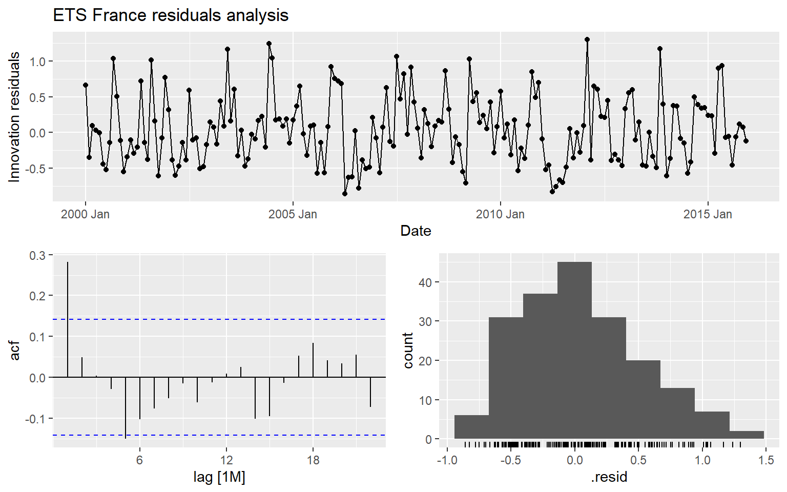
## Warning: Removed 12 rows containing missing values (`geom_line()`).## Warning: Removed 12 rows containing missing values (`geom_point()`).## Warning: Removed 12 rows containing non-finite values (`stat_bin()`).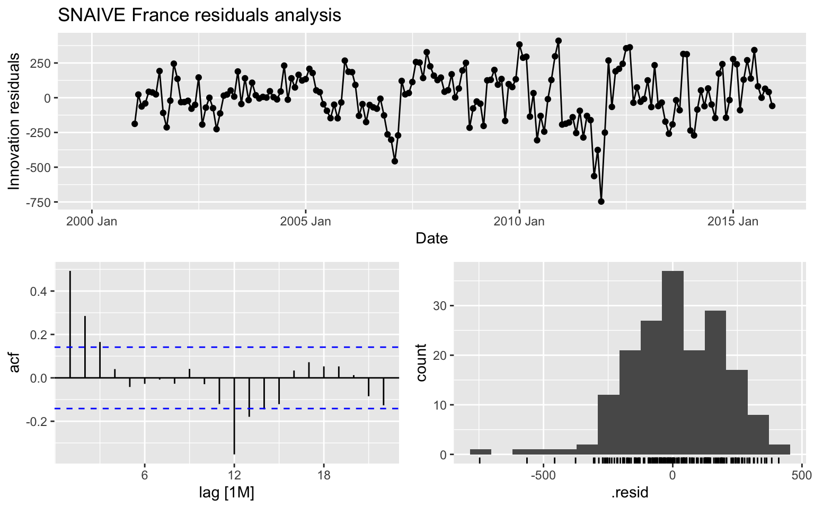
4.5 Lichtenstein
Testing Models
Below is the plot of how well each model fits the data based on a 60-period prediction starting from 2016. This code fits different models to the training data, generates forecasts, and then applies a constraint to the forecasted mean values to ensure they are not negative. Based on the previous analysis Lichtenstein data is NON stationary time series, so we had to difference or log the data to make it stationary before using our models. We tried both, and it seemed like using the log of the data worked best.
Another thing to mention about Lichtenstein, is that for the ETS, ARIMA and SNaive models, we decided to train them only after 2010. We made this decision because before 2010, the data was very different (upward trending at a much higher level) and thought that if the models looked at that period, they would probably not produce accurate results.

Measuring Model Accuracy
In our case S-Naive outperform during the model selection and analysis of accuracy. However S-Naive method may perform well for the time period that we have train our data, but it is important to note that it has some limitations. Indeed, it assumes that historical patterns will repeat exactly in the future, which may not always hold. The S-Naive method may not account for underlying factors or trends that could impact future outcomes. Therefore, there is an increased risk of inaccurate forecasts if the method is blindly applied without considering other relevant factors. ETS could be great models based on a trade off between forecasting error and complexity of the model. ETS model has the third lowest RMSE and second lowest MAE which makes him a good candidate. In order to select a model, we can analyse residuals of those models
| .model | .type | ME | RMSE | MAE | MPE | MAPE | MASE | RMSSE | ACF1 |
|---|---|---|---|---|---|---|---|---|---|
| ARIMA(Lichtenstein) | Test | 0.4560409 | 0.7600371 | 0.5055350 | NaN | Inf | NaN | NaN | 0.3101830 |
| ETS(Lichtenstein) | Test | 0.0076093 | 0.6384691 | 0.4181878 | -Inf | Inf | NaN | NaN | 0.3882763 |
| SNAIVE(Lichtenstein) | Test | 0.0878665 | 0.6333824 | 0.2931107 | -Inf | Inf | NaN | NaN | 0.4103591 |
Residuals
It is interesting to examine any outliers or extreme values in the residuals. The ACF analysis for SNaive shows Positive correlations between the ts and its lags. In opposite ETS model shows that there’s no correlation between thoses values. Thus, each observation in the ts can be considered unrelated to the previous values. Consequently, Lichtenstein ts might need covariate to forecast and analyse it adequately. Concerning the residual, it should ideally appear random, in our case residuals are chinked around zero for both models (SNaive & ETS), thus those might shows autocorrelation.
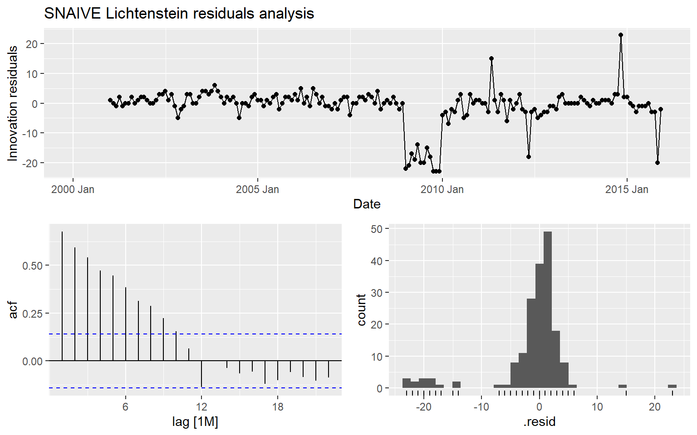
4.6 Total
Testing Models
Below is the plot of how well each model fits the data based on a 60-period prediction starting from 2016.
#Split the data
training_tot <- data_elec %>% select(Date, Total) %>% filter(Date < as.Date("2016-01-01"))
test_tot <- data_elec %>% select(Date, Total) %>% filter(Date >= as.Date("2016-01-01"))
# Fit ARIMA model and generate forecasts
data_fit_tot_a <- training_tot %>%
model(ARIMA(Total))
forecasts_tot_a <- data_fit_tot_a %>%
forecast(h = 60)
# Fit ETS model and generate forecasts
data_fit_tot_e <- training_tot %>%
model(ETS(Total))
forecasts_tot_e <- data_fit_tot_e %>%
forecast(h = 60)
# Fit seasonal naive model and generate forecasts
data_fit_tot_n <- training_tot %>%
model(SNAIVE(Total))
forecasts_tot_n <- data_fit_tot_n %>%
forecast(h = 60)
# Combine forecasts into a single data frame
all_forecasts_tot <- bind_rows(
data.frame(Date = forecasts_tot_a$Date, Method = "ARIMA", Forecast = forecasts_tot_a$.mean),
data.frame(Date = forecasts_tot_e$Date, Method = "ETS", Forecast = forecasts_tot_e$.mean),
data.frame(Date = forecasts_tot_n$Date, Method = "SNAIVE", Forecast = forecasts_tot_n$.mean))
# Plot all three sets of forecasts together
data_elec %>% autoplot(Total) +
geom_line(data = all_forecasts_tot, aes(x = Date, y = Forecast, color = Method)) +
labs(title = "Electricity Demand to all countries")
Measuring Model Accuracy
According to the accuracy table below, RMSE, MAE, as well as AIC, AICc, and BIC, ARIMA has the lowest values on the test data than the ETS model.
#Accuracy
total_accuracy_a <-accuracy(forecasts_tot_a, test_tot)
total_accuracy_e <-accuracy(forecasts_tot_e, test_tot)
total_accuracy_n <-accuracy(forecasts_tot_n, test_tot)
total_accuracy_table <- rbind(
data.frame(total_accuracy_a),
data.frame(total_accuracy_e),
data.frame(total_accuracy_n))| .model | .type | ME | RMSE | MAE | MPE | MAPE | MASE | RMSSE | ACF1 |
|---|---|---|---|---|---|---|---|---|---|
| ARIMA(Total) | Test | -152.5501 | 469.2775 | 322.1278 | -8.530677 | 13.59182 | NaN | NaN | 0.5885794 |
| ETS(Total) | Test | -416.7913 | 578.6994 | 472.6052 | -18.311113 | 19.85636 | NaN | NaN | 0.5109384 |
| SNAIVE(Total) | Test | -221.6833 | 564.7462 | 416.0833 | -10.958780 | 17.23146 | NaN | NaN | 0.5163818 |
## Series: Total
## Model: ARIMA(1,0,1)(2,0,0)[12] w/ mean
##
## Coefficients:
## ar1 ma1 sar1 sar2 constant
## 0.7159 -0.2076 0.3750 0.3755 195.5746
## s.e. 0.0912 0.1344 0.0685 0.0708 11.2588
##
## sigma^2 estimated as 63131: log likelihood=-1335.72
## AIC=2683.45 AICc=2683.9 BIC=2702.99## Series: Total
## Model: ETS(A,N,A)
## Smoothing parameters:
## alpha = 0.5690082
## gamma = 0.0002217215
##
## Initial states:
## l[0] s[0] s[-1] s[-2] s[-3] s[-4] s[-5] s[-6]
## 2735.222 -30.5261 -39.40677 146.1547 -77.94267 -290.9088 509.1663 81.12738
## s[-7] s[-8] s[-9] s[-10] s[-11]
## 83.81698 -205.6554 -47.17994 -126.659 -1.986777
##
## sigma^2: 60986.36
##
## AIC AICc BIC
## 3140.436 3143.164 3189.299Residuals
The output below also suggests that the ARIMA model did well in capturing all the dynamics in data, as the residuals seem to be white noise.

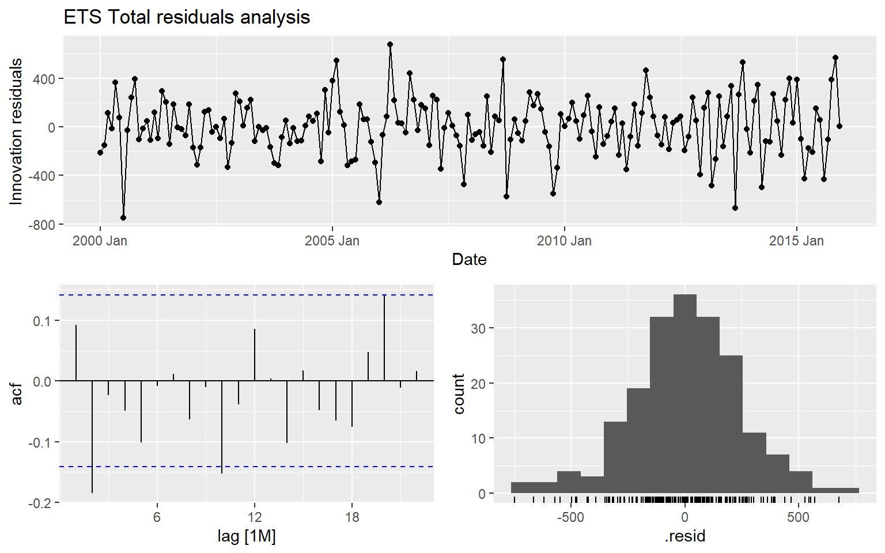
## Warning: Removed 12 rows containing missing values (`geom_line()`).## Warning: Removed 12 rows containing missing values (`geom_point()`).## Warning: Removed 12 rows containing non-finite values (`stat_bin()`).Result
All of these metrics are important for evaluating forecast accuracy. Still, our goal is to obtain the most accurate forecast. Therefore, we give more weight to RMSE and MAE metrics than AIC. As a result, the ARIMA model is selected to forecast the electricity demand in Italy and the Total, and ETS model is selected to forecast in Germany, Austria and France. Finally, S-Naive is selected to forecast in Lichtenstein.
5. Forecast
For each of our country forecasts, we have decided to use the model with the lowest RMSE as shown in the previous section. This is because we want our models to be as “accurate” as possible, in away that minimizes the error/distance between our forecast values and the actual values.
Below, for each country, you can see a residual analysis for every selected model, a graph of the forecast, and finally the forecast table. The outcome of the residual analysis is to confirm that the model has done a good job fitting the data, and more specifically, here’s what we obtained from it:
A good model fit has the following characteristics in terms of its residuals:
- The residuals are distributed symmetrically, in a shape that resembles a Normal distribution.
- Low ACF (autocorrelation) in the first few lags.
- No Heteroskedasticity: the variance of the residuals is constant.
- There is no trend in the residuals.
In essence, what this all means, is that the residuals are white noise. Let’s now look at the results for each country, and make some more specific comments:
5.1 Germany
We fit Germany electricity demand data using the ETS model.
# Modelling ARIMA automatically
ets_germany <- data_elec %>%
select(Germany) %>%
model(ets = ETS(Germany))
# Forecasting using the models
forecast_ets_germany <- ets_germany %>% forecast(h = 13) %>% hilo(90)Checking Residuals
The output below suggests that the ETS model did a decent job in capturing all the dynamics in data, as the residuals seem to be white noise.
However, it seems like this model for Germany is not fitting well. More specifically, we see that there is more variation in the distribution of the residuals of Germany’s model. Nevertheless, the distribution of the errors is symmetric, which is good. Furthermore, we notice the peaks in some of the lagged periods of the ACF graph, indicating the presence of autocorrelation between the time periods and the previous time periods, which is not great in terms of how well the model fits the data.
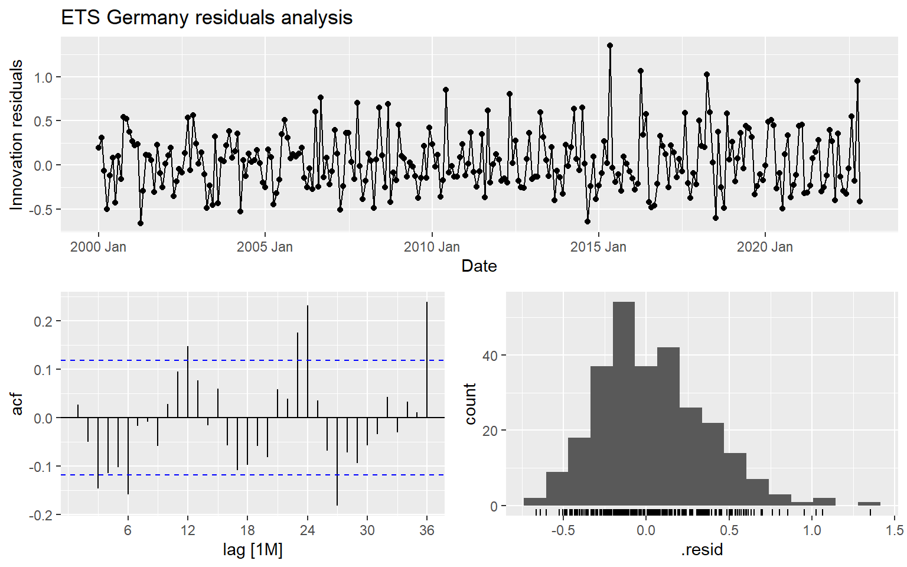
Graphing the forecast
For better visualization, we plot our forecast results starting from 2015.
ets_germany %>% forecast(h = 13) %>% autoplot(Germany_since_2015) +
labs(title = "ETS Forecast for Germany")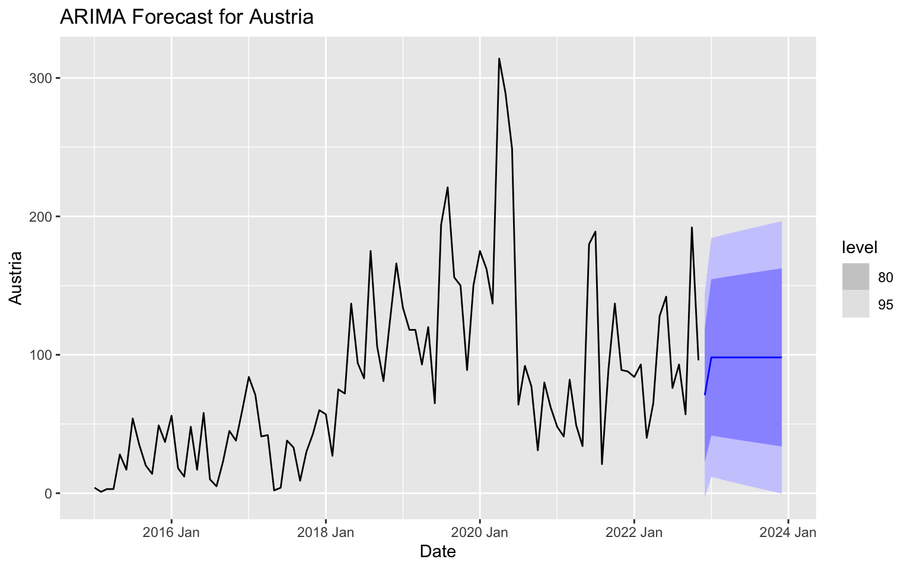
#Extracting the forecasted values
forecast_table_germany_e <- data.frame(Model = c("ETS"),
Forecast_Values = c(forecast_ets_germany))
forecast_table_germany_e <- forecast_table_germany_e %>% select(Forecast_Values.Date,Forecast_Values..mean, Forecast_Values.90.)
forecast_table_germany_e$Country <- "Germany"
colnames(forecast_table_germany_e)[1] <- "Month"
colnames(forecast_table_germany_e)[2] <- "PF"
colnames(forecast_table_germany_e)[3] <- "CI"Forecast Table
The resulting forecast table for Germany is shown below.
| Month | PF | CI | Country |
|---|---|---|---|
| 2022 Dec | 157.1304 | [69.352709, 244.9081]90 | Germany |
| 2023 Jan | 134.0659 | [38.462369, 229.6695]90 | Germany |
| 2023 Feb | 104.7389 | [15.969441, 193.5083]90 | Germany |
| 2023 Mar | 133.3176 | [3.902624, 262.7325]90 | Germany |
| 2023 Apr | 272.8334 | [-23.725170, 569.3920]90 | Germany |
| 2023 May | 489.8151 | [-97.314650, 1076.9448]90 | Germany |
| 2023 Jun | 429.4505 | [-132.035138, 990.9361]90 | Germany |
| 2023 Jul | 429.2634 | [-177.873964, 1036.4007]90 | Germany |
| 2023 Aug | 398.2749 | [-207.194123, 1003.7439]90 | Germany |
| 2023 Sep | 282.1175 | [-176.503436, 740.7385]90 | Germany |
| 2023 Oct | 218.3380 | [-159.623254, 596.2992]90 | Germany |
| 2023 Nov | 176.7443 | [-147.928838, 501.4175]90 | Germany |
| 2023 Dec | 156.4080 | [-147.602206, 460.4183]90 | Germany |
5.2 Italy
We fit Italy electricity demand data using the ARIMA model.
# Modelling ETS automatically
arima_italy <- data_elec %>%
select(Italy) %>%
model(ARIMA(Italy))
# Forecasting using the models
forecast_arima_italy <- arima_italy %>% forecast(h = 13) %>% hilo(90)Checking Residuals
The output below suggests that the ARIMA model did well in capturing all the dynamics in data, as the residuals seem to be white noise.

Graphing the forecast
For better visualization, we plot our forecast results starting from 2018.
arima_italy %>% forecast(h = 13) %>% autoplot(Italy_since_2018) +
labs(title = "ARIMA Forecast for Italy")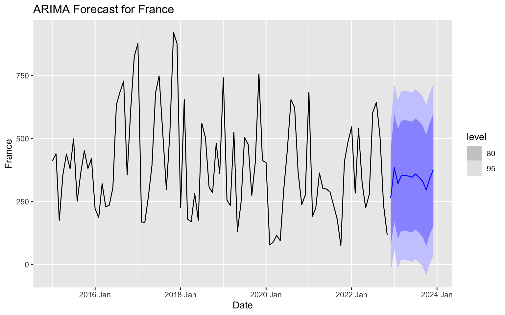
#Extracting the forecasted values
forecast_table_italy_a <- data.frame(Model = c("ARIMA"),
Forecast_Values = c(forecast_arima_italy))
forecast_table_italy_a <- forecast_table_italy_a %>% select(Forecast_Values.Date,Forecast_Values..mean, Forecast_Values.90.)
forecast_table_italy_a$Country <- "Italy"
colnames(forecast_table_italy_a)[1] <- "Month"
colnames(forecast_table_italy_a)[2] <- "PF"
colnames(forecast_table_italy_a)[3] <- "CI"Forecast Table
The resulting forecast table for Italy is shown below.
| Month | PF | CI | Country |
|---|---|---|---|
| 2022 Dec | 1826.559 | [1289.9394, 2363.178]90 | Italy |
| 2023 Jan | 1830.641 | [1164.2666, 2497.015]90 | Italy |
| 2023 Feb | 2084.348 | [1309.6550, 2859.040]90 | Italy |
| 2023 Mar | 2064.941 | [1195.3191, 2934.564]90 | Italy |
| 2023 Apr | 1763.042 | [807.8790, 2718.206]90 | Italy |
| 2023 May | 1826.055 | [792.4052, 2859.704]90 | Italy |
| 2023 Jun | 1930.824 | [824.2409, 3037.406]90 | Italy |
| 2023 Jul | 2272.030 | [1097.0320, 3447.028]90 | Italy |
| 2023 Aug | 1978.937 | [739.2947, 3218.580]90 | Italy |
| 2023 Sep | 1936.262 | [635.1825, 3237.342]90 | Italy |
| 2023 Oct | 1939.172 | [579.4288, 3298.916]90 | Italy |
| 2023 Nov | 1906.992 | [491.0130, 3322.971]90 | Italy |
| 2023 Dec | 1816.285 | [288.3433, 3344.226]90 | Italy |
5.3 Austria
We fit Austria electricity demand data using the ETS model.
# Modelling ETS automatically
ets_austria <- data_elec %>%
select(Austria) %>%
model(ETS(Austria))
# Forecasting using the models
forecast_ets_austria <- ets_austria %>% forecast(h = 13) %>% hilo(90)Checking Residuals
The output below suggests that the ETS model did well in capturing all the dynamics in data, as the residuals seem to be white noise.
Graphing the forecast
For better visualization, we plot our forecast results starting from 2018.
ets_austria %>% forecast(h = 13) %>% autoplot(Austria_since_2018) +
labs(title = "ETS Forecast for Austria")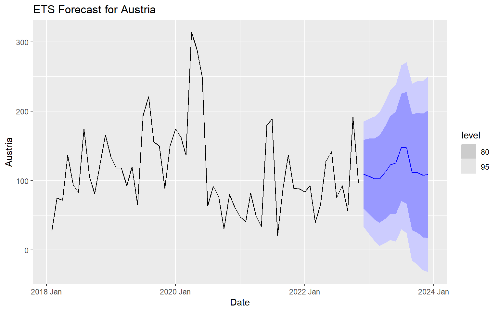
#Extracting the forecasted values
forecast_table_austria_e <- data.frame(Model = c("ETS"),
Forecast_Values = c(forecast_ets_austria))
forecast_table_austria_e <- forecast_table_austria_e %>% select(Forecast_Values.Date,Forecast_Values..mean, Forecast_Values.90.)
forecast_table_austria_e$Country <- "Austria"
colnames(forecast_table_austria_e)[1] <- "Month"
colnames(forecast_table_austria_e)[2] <- "PF"
colnames(forecast_table_austria_e)[3] <- "CI"Forecast Table
The resulting forecast table for Austria is shown below.
| Month | PF | CI | Country |
|---|---|---|---|
| 2022 Dec | 109.2886 | [45.7111685, 172.8659]90 | Austria |
| 2023 Jan | 106.3760 | [36.6047883, 176.1473]90 | Austria |
| 2023 Feb | 102.6006 | [27.1422181, 178.0590]90 | Austria |
| 2023 Mar | 102.4725 | [21.7264929, 183.2184]90 | Austria |
| 2023 Apr | 111.9032 | [26.1952715, 197.6112]90 | Austria |
| 2023 May | 122.5810 | [32.1830104, 212.9790]90 | Austria |
| 2023 Jun | 125.5234 | [30.6669550, 220.3798]90 | Austria |
| 2023 Jul | 148.0999 | [48.9853517, 247.2144]90 | Austria |
| 2023 Aug | 147.6801 | [44.4830307, 250.8771]90 | Austria |
| 2023 Sep | 112.2665 | [5.1423886, 219.3906]90 | Austria |
| 2023 Oct | 111.3402 | [0.4280154, 222.2524]90 | Austria |
| 2023 Nov | 107.7202 | [-6.8564988, 222.2970]90 | Austria |
| 2023 Dec | 109.2886 | [-8.8375275, 227.4146]90 | Austria |
5.4 France
We fit France electricity demand data using the ETS model.
# Modelling ETS automatically
ets_france <- data_elec %>%
select(France) %>%
model(ETS(France))
# Forecasting using the models
forecast_ets_france <- ets_france %>% forecast(h = 13) %>% hilo(90)Checking Residuals
The output below suggests that the ETS model did a decent job in capturing all the dynamics in data, as the residuals seem to be white noise.
However, it seems like this model for France is not fitting as well as the other models for the previous countries. More specifically, we see that there is more variation in the distribution of the residuals of France’s model compared to other countries. Nevertheless, the distribution of the errors is symmetric, which is good. Furthermore, we notice a peak in the first lagged period of the ACF graph, indicating the presence of autocorrelation between a time period and the previous time period, which is not great in terms of how well the model fits the data.
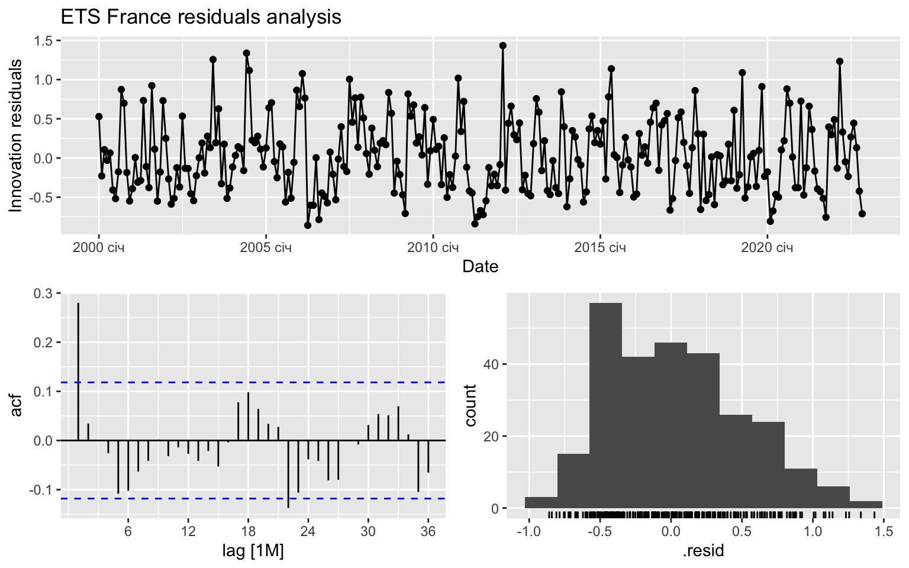
Graphing the forecast
For better visualization, we plot our forecast results starting from 2015.
ets_france %>% forecast(h = 13) %>% autoplot(France_since_2015) +
labs(title = "ETS Forecast for France")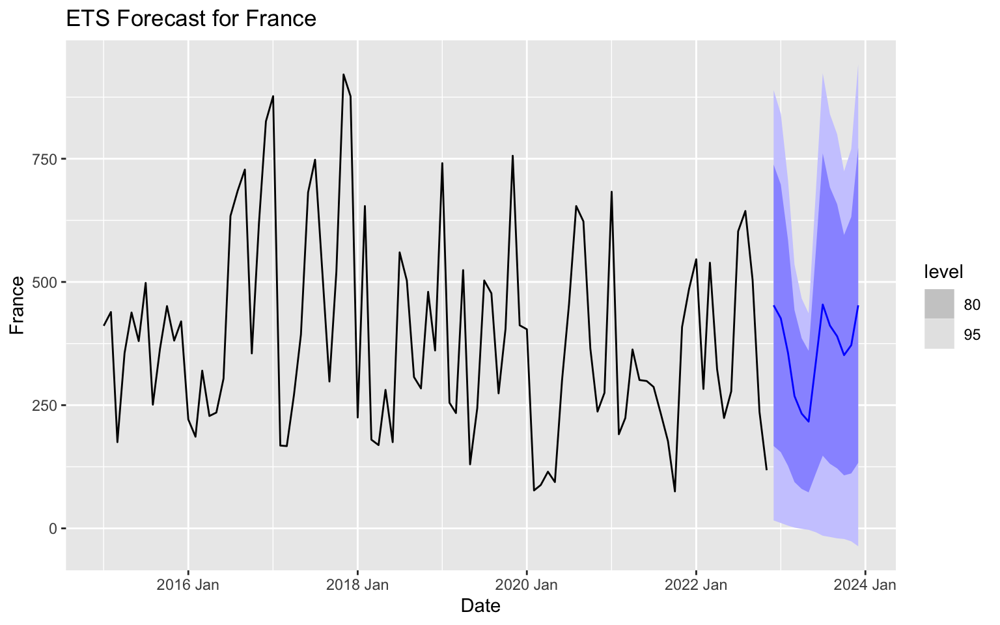
#Extracting the forecasted values
forecast_table_france_e <- data.frame(Model = c("ETS"),
Forecast_Values = c(forecast_ets_france))
forecast_table_france_e <- forecast_table_france_e %>% select(Forecast_Values.Date,Forecast_Values..mean, Forecast_Values.90.)
forecast_table_france_e$Country <- "France"
colnames(forecast_table_france_e)[1] <- "Month"
colnames(forecast_table_france_e)[2] <- "PF"
colnames(forecast_table_france_e)[3] <- "CI"Forecast Table
The resulting forecast table for France is shown below.
| Month | PF | CI | Country |
|---|---|---|---|
| 2022 Dec | 452.6419 | [86.27746, 819.0064]90 | France |
| 2023 Jan | 426.1098 | [77.66769, 774.5518]90 | France |
| 2023 Feb | 356.1703 | [61.96845, 650.3721]90 | France |
| 2023 Mar | 268.4822 | [44.50058, 492.4638]90 | France |
| 2023 Apr | 232.8623 | [36.68973, 429.0349]90 | France |
| 2023 May | 216.6737 | [32.37475, 400.9727]90 | France |
| 2023 Jun | 336.6541 | [47.57567, 625.7324]90 | France |
| 2023 Jul | 454.1439 | [60.52136, 847.7665]90 | France |
| 2023 Aug | 411.5258 | [51.54458, 771.5071]90 | France |
| 2023 Sep | 389.8002 | [45.71607, 733.8843]90 | France |
| 2023 Oct | 351.4656 | [38.43236, 664.4988]90 | France |
| 2023 Nov | 371.7370 | [37.71470, 705.7594]90 | France |
| 2023 Dec | 452.6433 | [42.36154, 862.9251]90 | France |
5.5 Lichtenstein
We fit Lichtenstein electricity demand data using the SNaive model.
Checking Residuals
As expected the SNaive is a relatively simple model, it hardly capture all the dynamics in data, since the residuals are not white noise. Also, it is not surprising to observe correlation between ts and lags, since it is inherent from a Naive models.
#Checking the residuals before forecasting
n_Licht %>% gg_tsresiduals(lag_max = 36) + labs(title = "SNaive Lichtenstein residuals analysis")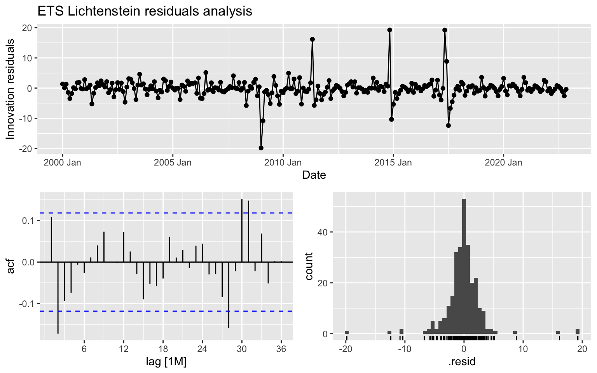
Graphing the forecast
# Graphing the forecast
n_Licht %>% forecast(h = 13) %>% autoplot(lich_log_2010_2022) +
labs(title = "SNaive Forecast for Lichtenstein")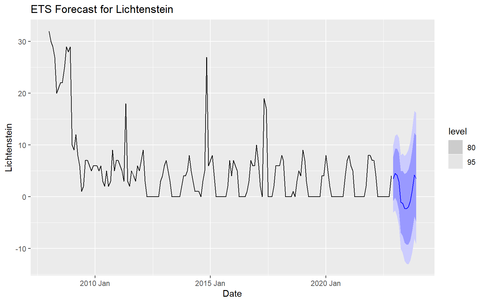
#Extracting the forecasted values
forecast_table_Lichtenstein_n <- data.frame(Model = c("SNaive"),
Forecast_Values = c(forecast_n_Licht))
forecast_table_Lichtenstein_n <- forecast_table_Lichtenstein_n %>% select(Forecast_Values.Date,Forecast_Values..mean, Forecast_Values.90.)
forecast_table_Lichtenstein_n$Country <- "Lichtenstein"
colnames(forecast_table_Lichtenstein_n)[1] <- "Month"
colnames(forecast_table_Lichtenstein_n)[2] <- "PF"
colnames(forecast_table_Lichtenstein_n)[3] <- "CI"Forecast Table
The resulting forecast table for Lichtenstein is shown below.
#forecast_table_Lichtenstein_n
kbl(forecast_table_Lichtenstein_n) %>%
kable_styling(fixed_thead = T)| Month | PF | CI | Country |
|---|---|---|---|
| 2022 Dec | 2.079442 | [0.7999965, 3.358887]90 | Lichtenstein |
| 2023 Jan | 1.945910 | [0.6664651, 3.225355]90 | Lichtenstein |
| 2023 Feb | 1.945910 | [0.6664651, 3.225355]90 | Lichtenstein |
| 2023 Mar | 1.386294 | [0.1068493, 2.665739]90 | Lichtenstein |
| 2023 Apr | 0.000000 | [-1.2794450, 1.279445]90 | Lichtenstein |
| 2023 May | 0.000000 | [-1.2794450, 1.279445]90 | Lichtenstein |
| 2023 Jun | 0.000000 | [-1.2794450, 1.279445]90 | Lichtenstein |
| 2023 Jul | 0.000000 | [-1.2794450, 1.279445]90 | Lichtenstein |
| 2023 Aug | 0.000000 | [-1.2794450, 1.279445]90 | Lichtenstein |
| 2023 Sep | 0.000000 | [-1.2794450, 1.279445]90 | Lichtenstein |
| 2023 Oct | 0.000000 | [-1.2794450, 1.279445]90 | Lichtenstein |
| 2023 Nov | 1.386294 | [0.1068493, 2.665739]90 | Lichtenstein |
| 2023 Dec | 2.079442 | [0.2700330, 3.888850]90 | Lichtenstein |
5.6 Total
We fit Total electricity demand data using the ARIMA model.
# Modelling ETS automatically
arima_total <- data_elec %>%
select(Total) %>%
model(ARIMA(Total))
# Forecasting using the models
forecast_arima_total <- arima_total %>% forecast(h = 13) %>% hilo(90)Checking Residuals
The output below suggests that the ARIMA model did well in capturing all the dynamics in data, as the residuals seem to be white noise.
arima_total %>% gg_tsresiduals(lag_max = 36) + labs(title = "ARIMA residuals analysis for all countries")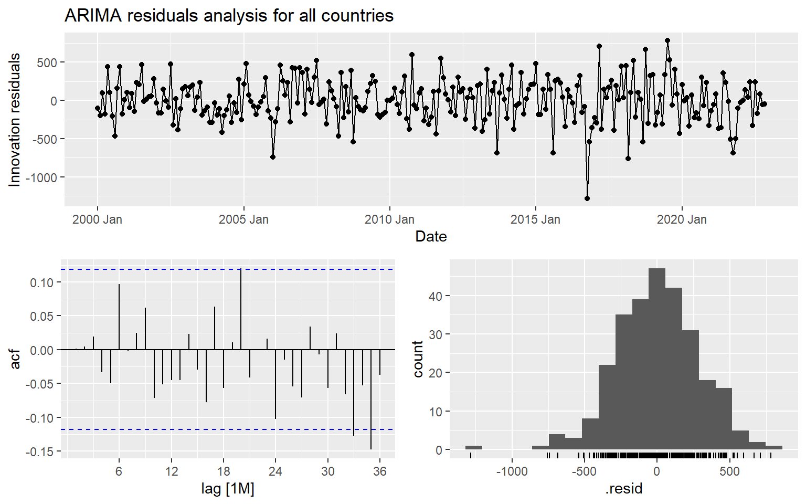
Graphing the forecast
For better visualization, we plot our forecast results starting from 2015.
arima_total %>% forecast(h = 13) %>% autoplot(Total_since_2015) +
labs(title = "ARIMA Forecast for All Countries")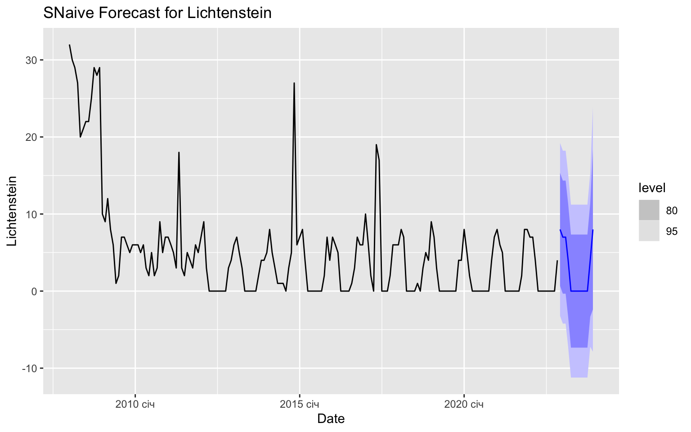
#Extracting the forecasted values
forecast_table_total_a<- data.frame(Model = c("ARIMA"),
Forecast_Values = c(forecast_arima_total))
forecast_table_total_a <- forecast_table_total_a %>% select(Forecast_Values.Date,Forecast_Values..mean, Forecast_Values.90.)
forecast_table_total_a$Country <- "Total"
colnames(forecast_table_total_a)[1] <- "Month"
colnames(forecast_table_total_a)[2] <- "PF"
colnames(forecast_table_total_a)[3] <- "CI"Forecast Table
The resulting forecast table for Total is shown below.
| Month | PF | CI | Country |
|---|---|---|---|
| 2022 Dec | 2336.515 | [1867.508, 2805.521]90 | Total |
| 2023 Jan | 2507.818 | [1979.592, 3036.043]90 | Total |
| 2023 Feb | 2489.217 | [1932.451, 3045.983]90 | Total |
| 2023 Mar | 2580.353 | [2009.191, 3151.514]90 | Total |
| 2023 Apr | 2302.442 | [1723.875, 2881.008]90 | Total |
| 2023 May | 2411.328 | [1828.916, 2993.740]90 | Total |
| 2023 Jun | 2591.927 | [2007.509, 3176.345]90 | Total |
| 2023 Jul | 3070.838 | [2485.371, 3656.306]90 | Total |
| 2023 Aug | 2798.490 | [2212.473, 3384.507]90 | Total |
| 2023 Sep | 2469.884 | [1883.579, 3056.189]90 | Total |
| 2023 Oct | 2412.024 | [1825.569, 2998.480]90 | Total |
| 2023 Nov | 2300.391 | [1713.856, 2886.926]90 | Total |
| 2023 Dec | 2299.457 | [1694.028, 2904.886]90 | Total |
Combining all forecasts into one table:
Below is the final table containing Month, point
forecast PF, 90% lower and upper confidence levels interval
forecast CI, and Country.
final_fc <- bind_rows(forecast_table_germany_e, forecast_table_italy_a, forecast_table_france_e, forecast_table_austria_e,forecast_table_Lichtenstein_n, forecast_table_total_a)
#Rounding all values to 0 significant figures because at the moment they have 4 decimals each...
final_fc$PF <- round(final_fc$PF)
final_fc$CI <- round(final_fc$CI)
#Removing all non-negative values from the CI column and replacing them by 0 - With string manipulation bc i can't find another way
final_fc$CI <- str_replace(final_fc$CI, "\\[(-\\d+),", "[0,")
# creating lower and upper bound
lower_str_fc <- gsub("\\[(.*),.*\\]90", "\\1", final_fc$CI)
upper_str_fc <- gsub("\\[.*, (.*)\\]90", "\\1", final_fc$CI)
# Converting to numeric values
lower_bound <- as.numeric(lower_str_fc)
upper_bound <- as.numeric(upper_str_fc)
# Creating the data frame
Correct_final_fc <- data.frame("Coutry" = final_fc$Country,
"Month" = final_fc$Month,
"Point Forecast" = final_fc$PF,
"Lower Interval" = lower_bound,
"Upper Interval" = upper_bound)
# Printing the adjusted output
#print(Correct_final_fc)
kbl(cbind(Correct_final_fc)) %>%
kable_paper() %>%
scroll_box(width = "100%", height = "500px")| Coutry | Month | Point.Forecast | Lower.Interval | Upper.Interval |
|---|---|---|---|---|
| Germany | 2022 Dec | 157 | 69 | 245 |
| Germany | 2023 Jan | 134 | 38 | 230 |
| Germany | 2023 Feb | 105 | 16 | 194 |
| Germany | 2023 Mar | 133 | 4 | 263 |
| Germany | 2023 Apr | 273 | 0 | 569 |
| Germany | 2023 May | 490 | 0 | 1077 |
| Germany | 2023 Jun | 429 | 0 | 991 |
| Germany | 2023 Jul | 429 | 0 | 1036 |
| Germany | 2023 Aug | 398 | 0 | 1004 |
| Germany | 2023 Sep | 282 | 0 | 741 |
| Germany | 2023 Oct | 218 | 0 | 596 |
| Germany | 2023 Nov | 177 | 0 | 501 |
| Germany | 2023 Dec | 156 | 0 | 460 |
| Italy | 2022 Dec | 1827 | 1290 | 2363 |
| Italy | 2023 Jan | 1831 | 1164 | 2497 |
| Italy | 2023 Feb | 2084 | 1310 | 2859 |
| Italy | 2023 Mar | 2065 | 1195 | 2935 |
| Italy | 2023 Apr | 1763 | 808 | 2718 |
| Italy | 2023 May | 1826 | 792 | 2860 |
| Italy | 2023 Jun | 1931 | 824 | 3037 |
| Italy | 2023 Jul | 2272 | 1097 | 3447 |
| Italy | 2023 Aug | 1979 | 739 | 3219 |
| Italy | 2023 Sep | 1936 | 635 | 3237 |
| Italy | 2023 Oct | 1939 | 579 | 3299 |
| Italy | 2023 Nov | 1907 | 491 | 3323 |
| Italy | 2023 Dec | 1816 | 288 | 3344 |
| France | 2022 Dec | 453 | 86 | 819 |
| France | 2023 Jan | 426 | 78 | 775 |
| France | 2023 Feb | 356 | 62 | 650 |
| France | 2023 Mar | 268 | 45 | 492 |
| France | 2023 Apr | 233 | 37 | 429 |
| France | 2023 May | 217 | 32 | 401 |
| France | 2023 Jun | 337 | 48 | 626 |
| France | 2023 Jul | 454 | 61 | 848 |
| France | 2023 Aug | 412 | 52 | 772 |
| France | 2023 Sep | 390 | 46 | 734 |
| France | 2023 Oct | 351 | 38 | 664 |
| France | 2023 Nov | 372 | 38 | 706 |
| France | 2023 Dec | 453 | 42 | 863 |
| Austria | 2022 Dec | 109 | 46 | 173 |
| Austria | 2023 Jan | 106 | 37 | 176 |
| Austria | 2023 Feb | 103 | 27 | 178 |
| Austria | 2023 Mar | 102 | 22 | 183 |
| Austria | 2023 Apr | 112 | 26 | 198 |
| Austria | 2023 May | 123 | 32 | 213 |
| Austria | 2023 Jun | 126 | 31 | 220 |
| Austria | 2023 Jul | 148 | 49 | 247 |
| Austria | 2023 Aug | 148 | 44 | 251 |
| Austria | 2023 Sep | 112 | 5 | 219 |
| Austria | 2023 Oct | 111 | 0 | 222 |
| Austria | 2023 Nov | 108 | 0 | 222 |
| Austria | 2023 Dec | 109 | 0 | 227 |
| Lichtenstein | 2022 Dec | 2 | 1 | 3 |
| Lichtenstein | 2023 Jan | 2 | 1 | 3 |
| Lichtenstein | 2023 Feb | 2 | 1 | 3 |
| Lichtenstein | 2023 Mar | 1 | 0 | 3 |
| Lichtenstein | 2023 Apr | 0 | 0 | 1 |
| Lichtenstein | 2023 May | 0 | 0 | 1 |
| Lichtenstein | 2023 Jun | 0 | 0 | 1 |
| Lichtenstein | 2023 Jul | 0 | 0 | 1 |
| Lichtenstein | 2023 Aug | 0 | 0 | 1 |
| Lichtenstein | 2023 Sep | 0 | 0 | 1 |
| Lichtenstein | 2023 Oct | 0 | 0 | 1 |
| Lichtenstein | 2023 Nov | 1 | 0 | 3 |
| Lichtenstein | 2023 Dec | 2 | 0 | 4 |
| Total | 2022 Dec | 2337 | 1868 | 2806 |
| Total | 2023 Jan | 2508 | 1980 | 3036 |
| Total | 2023 Feb | 2489 | 1932 | 3046 |
| Total | 2023 Mar | 2580 | 2009 | 3152 |
| Total | 2023 Apr | 2302 | 1724 | 2881 |
| Total | 2023 May | 2411 | 1829 | 2994 |
| Total | 2023 Jun | 2592 | 2008 | 3176 |
| Total | 2023 Jul | 3071 | 2485 | 3656 |
| Total | 2023 Aug | 2798 | 2212 | 3385 |
| Total | 2023 Sep | 2470 | 1884 | 3056 |
| Total | 2023 Oct | 2412 | 1826 | 2998 |
| Total | 2023 Nov | 2300 | 1714 | 2887 |
| Total | 2023 Dec | 2299 | 1694 | 2905 |
6. Challenges and Further Analysis
In this section we will comment on things didn’t go so well in our analysis, and things that could be improved.
Firstly, in the confidence bounds, some of Germany’s, Lichtenstein’s and Austria’s lower bound values were negative at the 90% confidence intervals, which you can actually see in the graphs of the forecasts for each country. This was a problem because electricity exports can’t physically be negative, and the lowest value they can take is zero. This happened because when fitting the models, we didn’t specify that the forecasts shouldn’t take negative values, and obviously the models can’t know that themselves. To solve this issue, we decided to manually set the lower bounds of these confidence intervals to 0 as it wouldn’t make any sense for them to be negative, however we do have to mention that by doing so, the confidence intervals we show are not 90% intervals.
Secondly, we decided not to add any covariates to our models, and only use the historical data we were given. Covariates could potentially help our forecasts be more accurate, as they can capture patterns and the effects of external factors which have an impact on electricity demand. An example of such a factor could be monthly average temperature values, because temperature probably plays a big role in energy consumption at the national level. Another example of a factor we could have included in our analysis would be the average hours of sunlight, because people tend to use more energy to light up their house in the winter compared to the summer. Another factor could be the implementation and use of different forms of energy, such as wind energy/nuclear energy to supply power inside a country, rather than simply importing it from Switzerland.
Appendix
Appendix 1. Decomposition Comparison
- Classical Decomposition assumes seasonal component repeats from year to year, which usually is not the case in reality, over smoothes rapid rises (is not recommended to use, but still…).
- STL Decomposition is a versatile and robust method that handles any seasonality; seasonal components can change, and smoothness can be controlled.
- X-11 method originated in the US Census Bureau and was further developed by Statistics Canada, based on classical decomposition, a slightly improved version of classical decomposition; the seasonal component varies slowly over time, highly robust to outliers and level shifts in the time series.
Appendix 2. Accuracy metrics comparison
AIC criteria are used to assess the goodness of fit of a model, with lower values indicating a better fit. RMSE and MAE are used to measure the difference between predicted values and actual values. Comparatively lower numbers of these metrics assume a better model’s forecast quality potential.
Appendix 3. Plots of all countries’ historical data
Germany
data_elec %>% autoplot(Germany) +
ggtitle("Exports from Switzerland to Germany") +
ylab("GWt") + xlab("Month")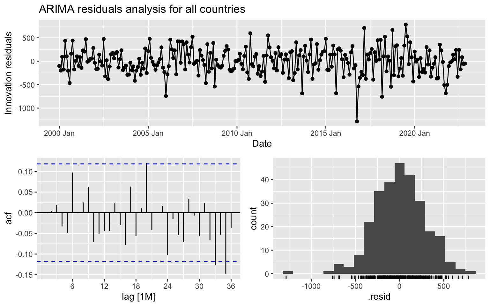
France
data_elec %>% autoplot(France) +
ggtitle("Exports from Switzerland to France") +
ylab("GWt") + xlab("Month")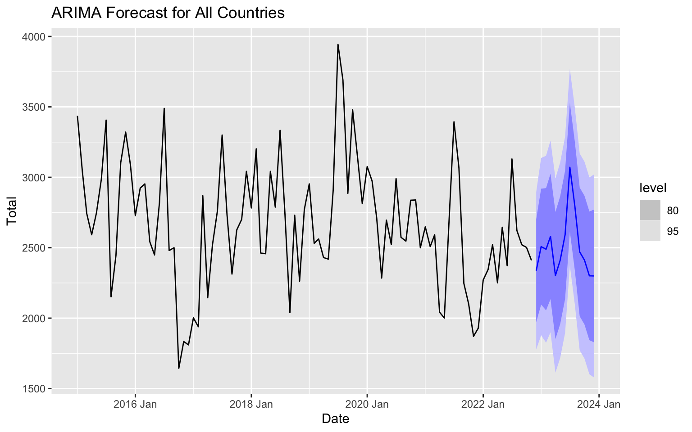
Italy
data_elec %>% autoplot(Italy) +
ggtitle("Exports from Switzerland to Italy") +
ylab("GWt") + xlab("Month")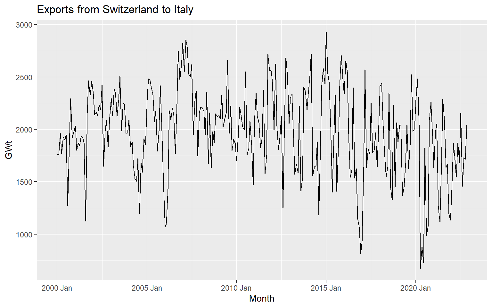
Austria
data_elec %>% autoplot(Austria) +
ggtitle("Exports from Switzerland to Austria") +
ylab("GWt") + xlab("Month")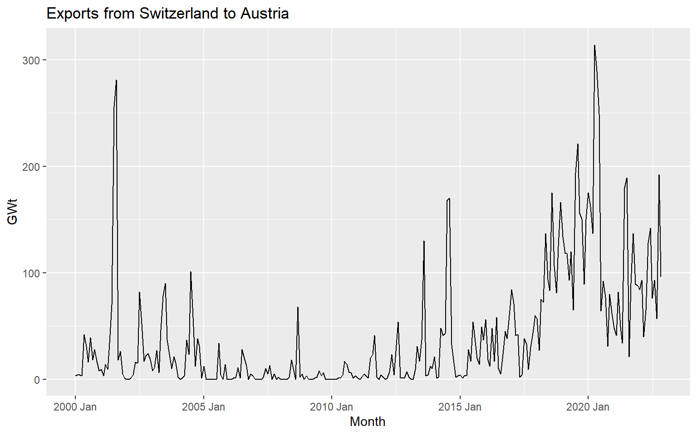
Lichtenstein
Appendix 4. Plots of Seasonal Subseries
Germany
France
data_elec %>% gg_subseries(France) +
ylab("GWt") + xlab("Month") +
ggtitle("Seasonal subseries plot: Swiss electricity exported to France")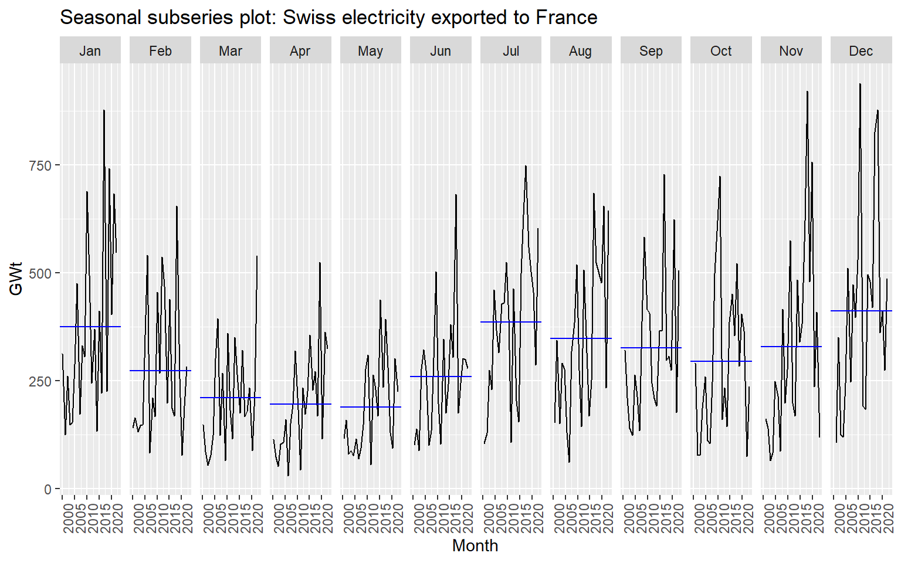
Italy
data_elec %>% gg_subseries(Italy) +
ylab("GWt") + xlab("Month") +
ggtitle("Seasonal subseries plot: Swiss electricity exported to Italy")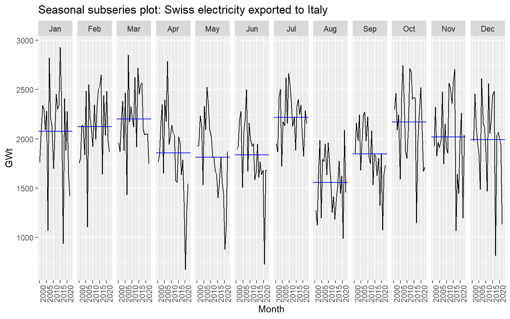
Austria
data_elec %>% gg_subseries(Austria) +
ylab("GWt") + xlab("Month") +
ggtitle("Seasonal subseries plot: Swiss electricity exported to Austria")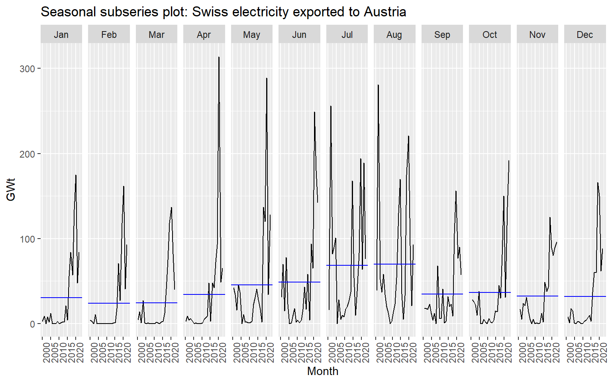